GUI 控制类型是可使用 Gui Add 添加到 GUI 窗口中的交互元素.
允许 ActiveX 组件(例如 MSIE 浏览器控件) 嵌入到 GUI 窗口.
语法:
Gui, Add, ActiveX, Options, ComponentName
示例:
Gui, Add, ActiveX, w980 h640 vWB, Shell.Explorer
GuiControlGet 可用于获取 ActiveX 对象.
要判断 ActiveX 对象的类型, 请使用 ComObjType().
要处理由对象公开的事件, 请使用 ComObjConnect().
Gui 示例 #10 演示了一个通过 WebBrowser 控件创建的简单网络浏览器.
一个按钮, 按下它即可触发相应动作.
语法:
Gui, Add, Button, Options, Name
示例:
Gui, Add, Button, Default w80, OK
外观:

除了常规选项和样式之外, 以下内容也是被支持或值得关注的:
Default: 使按钮成为默认按钮. 每当用户按下 Enter 时会自动触发默认按钮的动作, 除非此时键盘焦点在另一个按钮上或含有 WantReturn 样式的多行编辑控件中.
GLabel: g-标签或自动标签会在用户点击按钮或在处于焦点状态时按下 Space 或 Enter 时自动启动.
(不常见的数字样式): 有关列表, 请参阅按钮样式列表.
按钮的显示名称, 其中可以包含换行符(`n) 来开始新行.
可以使用一个和符号(&) 让某个字母带下划线,
例如 &Pause 中的字母 P, 这允许用户按下 Alt+P 作为其快捷键. 要显示一个原义的和符号, 请指定两个连续的和符号(&&).
如果一个按钮没有显式的 g-标签, 则使用自动标签. 例如, 如果首个 GUI 窗口包含一个 OK 按钮, 则当按下此按钮时, 将运行 ButtonOK 标签(如果存在). 对于非首个 GUI 窗口, 则需要在按钮的自动标签前加上窗口编号; 例如: 2ButtonOK.
如果按钮名称包含空格, 制表符, 换行符(`n), 回车(`r), 和符号(&) 或重音符(`), 则在其自动标签中会删去这些字符. 例如, 名为 "&Pause" 的按钮其自动标签的名称将为 ButtonPause. 同样地, 名为 "Save && Exit" 的按钮其自动标签的名称将为 ButtonSaveExit(两个连续的和符号用来显示单个原义的和符号).
以后要改变默认按钮为另一个按钮, 请参照此例, 这里让 Cancel 按钮成为默认按钮: GuiControl, +default, Cancel. 以后要让窗口没有默认按钮, 请参照此例: GuiControl, -default, OK.
已知限制: 某些桌面主题可能无法正确的显示按钮文本. 如果遇到此情况, 请尝试在 Options 中包含 -Wrap(负 Wrap). 不过这样也使得按钮名称中无法包含多行文本.
一个小方框, 可以选中或取消选中来表示 On/Off, Yes/No, 等等.
语法:
Gui, Add, CheckBox, Options, Caption
示例:
Gui, Add, CheckBox, vShipToBillingAddress, Ship to billing address?
外观:

除了常规选项和样式之外, 以下内容也是被支持或值得关注的:
Check3: 启用第三种状态, 这表示复选框既不处于选中状态也不处于未选中状态.
Checked: 复选框初始状态带有一个勾号. 单词 Checked 后面可以紧跟着数字 0, 1 或 -1(或者单词 Gray) 来表示初始状态(未选中, 已选中或不确定). 换句话说, Checked 和 Checked%VarContainingOne% 是相同的.
VName: 关联变量会接收以下数值: 已选中时为 1, 未选中时为 0, 不确定时为 -1.
GLabel: 每当用户点击或更改复选框时, g-标签会自动运行.
(不常见的数字样式): 有关列表, 请参阅 CheckBox 样式列表.
显示在框右侧的标注. 这通常用作提示或描述, 它可以包含换行符(`n) 来开始新行.
可以使用一个和符号(&) 让某个字母带下划线, 例如 &Pause 中的字母 P, 这允许用户按下 Alt+P 作为其快捷键. 要显示一个原义的和符号, 请指定两个连续的和符号(&&).
如果在 Options 中指定了宽度(W) 而没有指定行数(R) 或高度(H), 那么在需要时控件的文本将自动换行, 同时自动设置控件的高度.
已知限制: 某些桌面主题可能无法正确的显示 Checkbox 的文本. 如果遇到此情况, 请尝试在 Options 中包含 -Wrap(负 Wrap). 不过这样也使得按钮名称中无法包含多行文本.
当按下一个小按钮时会显示一个选项列表, 不过还允许输入自由格式的文本作为列表中可选的项目.
语法:
Gui, Add, ComboBox, Options, Choices
示例:
Gui, Add, ComboBox, vColorChoice, Red|Green|Blue|Black|White
外观:

除了常规选项和样式之外, 以下内容也是被支持或值得关注的:
ChooseN: 指定 N 为要预先选中的项目的编号. 例如, Choose5 会预选第五项(和其他选项一样, 它也可以为变量, 例如 Choose%Var%). 要在控件创建后改变选择或添加/移除列表中的条目, 请使用 GuiControl.
Uppercase 或 Lowercase: 将列表中的所有项目转换为大写字母或小写字母.
Sort: 按字母顺序排列列表的内容(这也会影响后面通过 GuiControl 添加的所有项目). 选项还会启用在弹出下拉列表时的增量搜索; 这使得可以通过输入一个项目名称的前几个字符来选择此项.
Limit: 将用户的输入限制在 ComboBox 编辑区域的可见宽度内.
Simple: 让 ComboBox 表现的像一个下方带有 ListBox 的 Edit 区域.
VName: 关联变量 会接收到当前选择项目的文本. 但是, 如果控件含有 AltSubmit 属性, 则变量将接收到项目的索引(首个项目为 1, 第二个为 2, 等等). 在这两种情况中, 如果没有选择的项目, 则输出变量将被设置为 ComboBox 编辑区域的内容.
GLabel: 当用户选择新项目或改变控件的文本时, g-标签 将自动运行.
Wn: 设置控件的宽度. 例如, 指定 w400 将使该控件的宽度为 400 像素. 如果忽略, 则默认值为当前字体大小的 15 倍.
Rn 或 Hn: 设置弹出列表的高度. 例如, 指定 r7 将使列表的高度为 7 行, 而 h400 将把选择字段和列表的总高度设置为 400 像素. 如果同时省略 R 和 H, 则列表将自动扩展以利用用户桌面的可用高度(然而, 操作系统版本早于 Windows XP 的情况下, 默认显示为 3 行).
(不常见的数字样式): 有关列表, 请参阅 ComboBox 样式列表.
一种以竖线分隔的选择列表, 如 Red|Green|Blue. 若要在窗口首次出现时预先选中其中一项, 请在其后添加两个竖线字符, 例如 Red|Green||Blue, 或者使用 Choose 选项.
要设置选区字段或列表项的高度, 请使用 CB_SETITEMHEIGHT 消息, 如下例所示:
Gui, Add, ComboBox, vcbx w200 hwndhcbx, One||Two ; CB_SETITEMHEIGHT = 0x0153 SendMessage, 0x0153, -1, 50,, ahk_id %hcbx% ; 设置选区字段的高度. SendMessage, 0x0153, 0, 50,, ahk_id %hcbx% ; 设置列表项的高度. Gui, Show, h70, Test
通过使用 GUI 选项的 +Delimiter 可以将字段间的分隔符更改为竖线符(|) 外的其他字符. 例如, Gui +Delimiter`n 将分隔符改为换行符(`n), 而 Gui +DelimiterTab 将改为 tab(`t).
另外, 如果您想将后续显示和隐藏弹出列表的过程自动化, 请使用 Control ShowDropDown 和 Control HideDropDown.
允许将 AutoHotkey 本身不直接支持的控件嵌入到 GUI(图形用户界面) 窗口中.
语法:
Gui, Add, Custom, Options, Text
示例:
Gui, Add, Custom, ClassComboBoxEx32
除了常规选项和样式之外, 以下内容也是被支持或值得关注的:
ClassName: 指定 Name 为所需控件的 Win32 类名. 例如, ClassComboBoxEx32 将添加 ComboBoxEx 控件, 或 ClassScintilla 将添加 Scintilla 控件(注意必须加载 SciLexer.dll 库后才能添加此控件).
GLabel: 每当脚本捕获到来自控件的事件时, g-标签会自动启动. 有关详情, 请参阅 Custom 通知.
Wn: 设置控件的宽度. 例如, 指定 w400 将使该控件的宽度为 400 像素. 如果省略, 则默认值为当前字体大小的 30 倍.
Rn 或 Hn: 设置控件的高度. 例如, 指定 r7 将为控件预留 7 行空间, 而 h400 则将控件的总高度设置为 400 像素. 如果同时省略 R 和 H, 则默认值为 5 行.
任意文本. 其是否会被忽略则取决于自定义控件的性质.
AutoHotkey 通过 Gui Add, GuiControl 或 GuiControlGet 使用标准的 Windows 操作方法来获取或替换控件中的文本.
类似 gMySubroutine 这样的 g-标签可以使用在控件的 Options 中, 这样可以捕获控件中的事件. 此子程序中可引用内置变量 A_Gui 和 A_GuiControl. 更重要的是, 它可以引用 A_GuiEvent, 其包含下列字符串的其中一个(为了与未来版本兼容, 脚本不应假定这些字符串是唯一可能的值):
HIWORD(wParam)).Gui 示例 #11 演示了如何添加和使用 IP 地址控件.
一个看起来像单行编辑控件的框, 不过它接受日期和/或时间. 同时提供下拉日历.
语法:
Gui, Add, DateTime, Options, Format
示例:
Gui, Add, DateTime, vMyDateTime, LongDate
外观:

除了常规选项和样式之外, 以下内容也是被支持或值得关注的:
ChooseTimestamp: 要预选今天外的其他日期, 请以 YYYYMMDD 格式指定. 例如, Choose20050531 将预选 May 31, 2005(和其他选项一样, 它还可以为变量, 例如 Choose%Var%). 日期的时间部分是可选的(有关详情, 请参阅下面的备注). 指定 Timestamp 为单词 None, 这样就不会选择任何日期/时间. ChooseNone 会在控件中创建一个复选框, 只要控件中不含日期则此复选框为未选中状态. 当控件中没有选择日期时, 控件的关联变量(如果有) 会获取到空值(空字符串).
RangeMinMax: 限制了所选日期可向前或向后的时间范围. 指定 MinMax 为以 YYYYMMDD 格式表示的最小和最大的日期(它们之间使用破折号连接). 例如, Range20050101-20050615 将范围限定在 2005 年的前 5.5 个月之内. 最小或最大的日期可以省略, 此时控件中在这个方向上的日期不受限制. 例如, Range20010101 将禁止选择早于 2001 年的日期而 Range-20091231(有前导的破折号) 将禁止选择迟于 2009 年的日期. 如果不含 Range 选项, 则可以选择介于 1601 和 9999 年份之间的任何日期. 无法限制日期的时间部分.
Right: 让下拉日历在控件的右边而不是左边拉下.
1: 在此控件的右边提供一个增减控件来修改日期和时间的值, 这会取代其他地方可用的下拉月历的修改按钮. 这不能和上面所述的 LongDate 格式选项联用.
2: 在控件中提供复选框, 用户可以取消此复选框选择来表示没有选择日期/时间. 控件创建后无法改变此选项.
VName: 接收所选择的以 YYYYMMDDHH24MISS 格式表示的日期和时间的关联变量. 日期和时间都存在, 不论它们在控件中实际是否可见.
GLabel: 当用户改变日期或时间时, g-标签 会自动运行. 每次运行时, 更新控件的关联变量(如果有).
Wn: 设置控件的宽度. 例如, 指定 w400 将使该控件的宽度为 400 像素. 如果忽略, 则默认值为当前字体大小的 30 倍.
Rn 或 Hn: 设置控件的高度. 例如, 指定 r7 将为控件预留 7 行空间, 而 h400 将把控件的总高度设置为 400 像素. 如果同时省略 R 和 H, 则默认为 1 行.
(不常见的数字样式): 有关列表, 请参阅 DateTime 样式列表.
如果空白或省略, 则默认使用区域设置的短日期格式. 例如, 在某些区域设置中它看起来像这样: 6/1/2005. 否则, 请指定以下格式之一
LongDate: 使用区域设置的长日期格式. 例如, 在某些区域设置中它看起来像这样: Wednesday, June 01, 2005
Time: 仅显示时间, 使用区域设置的时间格式. 尽管不显示日期, 但它仍然存在于控件中并且与 YYYYMMDDHH24MISS 格式的时间一起被获取. 例如, 在某些区域它看起来像这样: 9:37:45 PM
(自定义格式): 指定日期和时间格式的任意组合. 例如, M/d/yy HH:mm 显示的时间看起来像 6/1/05 21:37. 类似的, dddd MMMM d, yyyy hh:mm:ss tt 看起来像 Wednesday June 1, 2005 09:37:45 PM. 想要原义显示的字母和数字应该括在一对单引号中, 如此例所示: 'Date:' MM/dd/yy 'Time:' hh:mm:ss tt. 与之相比, 非字母数字字符(例如空格, tab, 斜杠, 冒号, 逗号和其他标点) 不需要包围在单引号中. 例外情况是单引号字符本身: 要产生原义的单引号, 请使用四个连续的单引号(''''), 不过如果它们已经包含在一对外部引号中则仅使用连续的两个就行了.
在 Choose 选项中, 可以选择显示当天的时间. 但是, 当进入或离开控件时, 时间部分必须总是在日期之前. 时间部分的格式为 HH24MISS(小时数, 分钟数, 秒数), 其中 HH24 含义是用 24 小时格式表示; 例如, 09 为 9am, 而 21 为 9pm. 因此, 完整的日期时间字符串的格式应为 YYYYMMDDHH24MISS.
当以 YYYYMMDDHH24MISS 格式指定日期时, 只有前导部分是不能缺少的. 其他任何省略的元素将使用下列默认值代替: MM: 月份 01, DD: 日期 01, HH24: 小时 00, MI: 分钟 00, SS: 秒 00.
在下拉日历中, 可以点击底部的今日字符串来选择今天的日期. 此外, 还可以点击年份和月份名称来方便地导航到新的月份或年份.
如果下拉式日历具有经典主题外观(仅适用于使用 Windows XP 或更早版本的系统; -Theme 选项在此无效), 下拉式日历中天数的颜色由 Gui Font 命令或 C(Color) 选项设置. 要改变日历任意部分的颜色, 如下例所示:
Gui +LastFound SendMessage, 0x1006, 4, 0xFFAA99, SysDateTimePick321 ; 0x1006 为 DTM_SETMCCOLOR. 4 为 MCSC_MONTHBK(背景颜色). 颜色必须以 BGR 格式指定, 而不是 RGB 格式(红蓝分量互换).
当按下一个小按钮时显示的选择列表.
语法:
Gui, Add, DropDownList, Options, Choices
示例:
Gui, Add, DropDownList, vColorChoice, Black|White|Red|Green|Blue
外观:
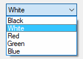
控件的类型名称可以是 DropDownList 或 DDL.
除了常规选项和样式之外, 以下内容也是被支持或值得关注的:
ChooseN: 指定 N 为要预先选中的项目的编号. 例如, Choose5 会预选第五项(和其他选项一样, 它也可以为变量, 例如 Choose%Var%). 要在控件创建后改变选择或添加/移除列表中的条目, 请使用 GuiControl.
Uppercase 或 Lowercase: 将列表中的所有项目转换为大写字母或小写字母.
Sort: 按字母顺序排列列表的内容(这也会影响后面通过 GuiControl 添加的所有项目). 选项还会启用在弹出下拉列表时的增量搜索; 这使得可以通过输入一个项目名称的前几个字符来选择此项.
VName: 关联变量 会接收到当前选择项目的文本. 但是, 如果控件含有 AltSubmit 属性, 则变量将接收到项目的索引(首个项目为 1, 第二个为 2, 等等.).
GLabel: 当用户选择新项目时, g-标签将自动运行.
Wn: 设置控件的宽度. 例如, 指定 w400 将使该控件的宽度为 400 像素. 如果忽略, 则默认值为当前字体大小的 15 倍.
Rn 或 Hn: 设置弹出列表的高度. 例如, 指定 r7 将使列表的高度为 7 行, 而 h400 将把选择字段和列表的总高度设置为 400 像素. 如果同时省略 R 和 H, 则列表将自动扩展以利用用户桌面的可用高度(然而, 操作系统版本早于 Windows XP 的情况下, 默认显示为 3 行).
(不常见的数字样式): 有关列表, 请参阅 DropDownList 样式列表.
一种以竖线分隔的选择列表, 如 Red|Green|Blue. 若要在窗口首次出现时预先选中其中一项, 请在其后添加两个竖线字符, 例如 Red|Green||Blue, 或者使用 Choose 选项.
要设置选区字段或列表项的高度, 请使用 CB_SETITEMHEIGHT 消息, 如下例所示:
Gui, Add, DDL, vcbx w200 hwndhcbx, One||Two ; CB_SETITEMHEIGHT = 0x0153 PostMessage, 0x0153, -1, 50,, ahk_id %hcbx% ; 设置选择字段的高度. PostMessage, 0x0153, 0, 50,, ahk_id %hcbx% ; 设置列表项的高度. Gui, Show, h70, Test
通过使用 GUI 选项的 +Delimiter 可以将字段间的分隔符更改为竖线符(|) 外的其他字符. 例如, Gui +Delimiter`n 将分隔符改为换行符(`n), 而 Gui +DelimiterTab 将改为 tab(`t).
另外, 如果您想将后续显示和隐藏弹出列表的过程自动化, 请使用 Control ShowDropDown 和 Control HideDropDown.
用户可以输入自由格式的文本区域.
语法:
Gui, Add, Edit, Options, Text
示例:
Gui, Add, Edit, r9 vMyEdit w135, Text to appear inside the edit control (omit this parameter to start off empty).
外观:
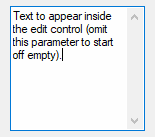
除了常规选项和样式之外, 以下内容也是被支持或值得关注的:
LimitN: 限制用户的输入. 如果 N 被省略, 限制输入在编辑区域的可见宽度内. 否则, 指定 N 为要限制输入指定数目的字符. 例如, Limit10 将允许输入不超过 10 个字符.
Uppercase 或 Lowercase: 把用户输入的字符自动转换成大写或小写.
Multi: 让控件可以含有多行文本. 然而, 通常没必要指定此选项, 因为如果 Text 包含多行文本, 其高度大于默认的行高, 或者其行数 已显式指定大于 1, 则该控件会自动被识别为多行控件. 例如, 在 Options 中指定 r3 r3 将创建一个具有以下默认属性的 3 行编辑控件: 一个垂直滚动条, 启用自动换行并且捕获 Enter 作为输入的一部分而不触发窗口的默认按钮.
Number: 阻止用户输入数字以外的其他字符到编辑区域(然而, 还是可能粘贴非数字字符到里面). 强制输入数字的另一种方法是添加 UpDown 控件到 Edit 控件.
Password: 通过将用户的输入替代为屏蔽字符来隐藏用户的输入(例如密码). 如果想使用非默认的屏蔽字符, 请在单词 Password 后加上此符号. 例如, Password* 将使用星号而不是黑色圆(项目符号) 作为屏蔽符号, 这是 Windows XP 中的默认屏蔽符号. 注意: 此选项对于多行编辑控件没有效果.
ReadOnly: 阻止用户改变控件的内容. 不过, 仍然可以滚动, 选择文本或将文本复制到剪贴板.
Tn: 在多行编辑控件中设置制表符位置(因为制表符位置决定了原义的制表符字符会跳转到的列位置, 所以它们可用于将文本格式化为多列). 如果没有使用 T 选项, 则每 32 个对话框单位设置一次制表位(每个对话框单位的宽度由操作系统决定). 如果仅使用过一次 T 选项, 则每 n 个单位设置一次横跨整个控件宽度的制表位. 例如, t64 将设置制表位之间的距离为默认的两倍. 要自定义制表位, 请指定 T 选项多次, 例如 t8 t16 t32 t64 t128. 在列表中每个绝对的列位置设置一个制表位, 制表位数目最大可达 50 个.
WantCtrlA [v1.0.44+]: 指定 -WantCtrlA(负 WantCtrlA) 阻止用户使用 Ctrl+A 来选择编辑控件中所有文本.
WantReturn: 指定 -WantReturn(负 WantReturn) 来阻止多行编辑控件捕获 Enter. 按下 Enter 相当于点击了窗口的默认按钮(如果有). 此时用户可以使用 Ctrl+Enter 来开始新行.
WantTab: 使得 Tab 产生制表符而不是导航到下一个控件. 如果没有这个选项, 则在多行编辑控件中用户可以按下 Ctrl+Enter 来产生制表符. 注意: WantTab 也可以用于单行编辑控件, 但在 Windows XP 和更低的系统中每个制表符显示为一个空框字符(不过实际保存的是真正的制表符).
Wrap: 指定 -Wrap(负 wrap) 来关闭多行编辑控件中的自动换行属性. 由于在控件创建后不能改变此样式, 所以需要使用下列方法的其中一个来改变它: 1) 销毁后重新创建窗口和其中的控件; 或 2) 创建两个重叠的编辑控件, 其中一个启用自动换行而另一个禁用. 当前没有使用的那个可以保持空的和/或隐藏.
VName: 接收控件内容的关联变量.
GLabel: 当用户改变控件的内容时, g-标签将会自动运行.
Wn: 设置控件的宽度. 例如, 指定 w400 将使该控件的宽度为 400 像素. 如果省略, 空编辑控件默认为当前字体大小的 15 倍. 非空编辑控件默认为最长行的宽度.
Rn 或 Hn: 设置控件的高度. 例如, 指定 r7 将为控件预留 7 行空间, 而 h400 则将控件的总高度设置为 400 像素. 如果同时省略 R 和 H, 则单行编辑控件默认为 1 行, 而空的多行编辑控件默认为 3 行. 非空的编辑控件默认会根据其包含的行数来设定高度.
(不常见的数字样式): 有关列表, 请参阅 Edit 样式列表.
如果为空或省略, 控件初始为空. 否则, 指定控件内部显示的文本内容.
要开始新的一行, 可以使用单独的换行符(`n) 或者回车加换行符(`r`n). 这两种方法都会在编辑控件中产生原义的 `r`n 对. 然而, 当控件的内容被保存到其关联变量(如果有) 时, 文本中的每个 `r`n 都会被自动转换为文本的换行符(`n). 此外, 可以通过延续片段将一个长行拆分成几个较短的行.
由于这是最后一个参数, 所以无需对逗号进行转义. 对于所有其他命令的最后一个参数来说, 也是如此.
如果控件启用了自动换行功能(这是多行编辑控件的默认设置), 那么用户在输入时所产生的换行操作不会生成换行符(只有 Enter 才能产生换行符).
要加载一个文本文件到编辑控件中, 请使用 FileRead 和 GuiControl:
Gui, Add, Edit, R20 vMyEdit FileRead, FileContents, C:\My File.txt GuiControl,, MyEdit, %FileContents%
HiEdit 是免费, 多选项卡, 支持大文件且消耗很少内存的编辑控件. 它可以编辑文本和二进制文件.
一个矩形的框, 常用来封装一组相关的控件.
语法:
Gui, Add, GroupBox, Options, Title
示例:
Gui, Add, GroupBox, w200 h100, Geographic Criteria
外观:
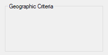
除了常规选项和样式之外, 以下内容也是被支持或值得关注的:
Wrap: 允许 Title 包含多行文字.
Wn: 设置控件的宽度. 例如, 指定 w400 将使该控件的宽度为 400 像素. 如果省略, 则默认值为当前字体大小的 15 倍, 加上 2 倍的 X-边距.
Rn 或 Hn: 设置控件的高度. 例如, 指定 r7 将为控件预留 7 行空间, 而 h400 则将控件的总高度设置为 400 像素. 如果同时省略 R 和 H, 则默认值为 2 行.
(不常见的数字样式): 有关列表, 请参阅 GroupBox 样式列表.
分组框的标题, 如果存在, 则显示在其左上角.
可以使用一个和符号(&) 让某个字母带下划线, 例如 &Criteria 中的字母 C. 这允许用户按下快捷键 Alt+C 来将键盘焦点设置到在 GroupBox 控件之后添加的第一个可输入的控件上. 要显示一个原义的和符号, 请指定两个连续的和符号(&&).
一个看起来像单行编辑控件的框, 但它接受用户按下的按键组合. 例如, 如果用户按下 Ctrl+Alt+C, 那么此框中将显示 "Ctrl + Alt + C".
语法:
Gui, Add, Hotkey, Options, KeyName
示例:
Gui, Add, Hotkey, vChosenHotkey, ^!c
外观:
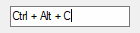
除了常规选项和样式之外, 以下内容也是被支持或值得关注的:
LimitN: 指定 N 为以下一个或多个数字的总和, 以限制用户可输入的热键类型: 1 阻止不含修饰符的按键, 2 阻止修饰符仅含 Shift 的按键, 4 阻止修饰符仅含 Ctrl 的按键, 8 阻止修饰符仅含 Alt 的按键, 阻止修饰符含 Shift+Ctrl 的按键, 32 阻止修饰符含 Shift+Alt 的按键, 而 128 阻止修饰符含 Shift+Ctrl+Alt 的按键(64 不受支持; 它不会正确执行). 例如, Limit1 将阻止输入不含修饰符的热键, 如字母和数字的输入, 而 Limit15 则要求至少有两个修饰键. 如果用户输入了被禁止的修饰键组合, 则自动使用 Ctrl+Alt 组合代替.
VName: 接收到热键修饰符和按键名称的关联变量, 这与 Hotkey 命令中的按键名称是一致的. 示例: ^!c, +!Home, +^Down, ^Numpad1, !NumpadEnd. 如果控件中没有热键, 则变量被置空.
GLabel: 当用户改变热键时, g-标签将会自动运行. 每次运行会更新控件的关联变量(如果有). 注意, 即使存在不完整的热键, g-标签也会运行. 例如, 如果用户按住 Ctrl, 则 g-标签会运行一次, 此时变量仅包含抑扬符(^). 当用户按完热键后, g-标签会再次运行, 此时变量包含完整的热键.
Wn: 设置控件的宽度. 例如, 指定 w400 将使该控件的宽度为 400 像素. 如果忽略, 则默认值为当前字体大小的 15 倍.
Rn 或 Hn: 设置控件的高度. 例如, 指定 r7 将为控件预留 7 行空间, 而 h400 将把控件的总高度设置为 400 像素. 如果同时省略 R 和 H, 则默认为 1 行.
如果为空或省略, 控件在初始时不含有热键. 否则, 请指定其修饰符和名称. 例如, ^!p 会显示 "Ctrl + Alt + P". 支持的修饰符仅包含 ^(Control), !(Alt) 和 +(Shift). 有关可用的按键名称, 请参阅 按键列表.
有些按键即使被识别为不同的名称, 也显示为相同的名称. 例如, ^Numpad7 和 ^NumpadHome 都可能显示为 "Ctrl + Num 7".
Hotkey 控件对热键的支持有限. 例如, 它不支持鼠标/控制器热键或 Win(LWin 和 RWin). 解决此问题的一种方法是提供一个或多个复选框 作为用户启用额外的修饰键(例如 Win) 的工具.
一种可以包含类似于网络浏览器中所见链接的文本控件.
语法:
Gui, Add, Link, Options, String
示例:
Gui, Add, Link,, This is a <a href="https://www.autohotkey.com">link</a> Gui, Add, Link,, Links may be used anywhere in the text like <a id="A">this</a> or <a id="B">that</a>
外观:
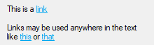
除了常规选项和样式之外, 以下内容也是被支持或值得关注的:
GLabel: 每当点击没有 HREF 属性的链接, 或者命令或 URL 执行失败时, g-标签将会自动运行. G-标签可以引用内置变量 A_GuiEvent(包含的事件类型; 目前总是单词 Normal), A_EventInfo(包含链接的基于 1 的索引) 和 ErrorLevel(包含的链接 HREF 属性的值(如果有), 否则, 链接的 id 属性值或空字符串).
(不常见的数字样式): 有关列表, 请参阅 Link 样式列表.
要显示的字符串. 将链接文本括在 <A> 和 </A> 标记内以创建可点击的链接, 还可以附加 ID 和/或 HREF 属性. 该字符串可以包含换行符(`n) 以开始新行. 此外, 可以通过延续片段将一个长行拆分成几个较短的行.
可以使用一个和符号(&) 让某个字母带下划线, 例如 &First Name 中的字母 F. 这允许用户按下快捷键 Alt+F 将键盘焦点设置到在 Link 控件之后添加的第一个可输入的控件上. 要显示一个原义的和符号, 请指定两个连续的和符号(&&).
由于这是最后一个参数, 所以无需对原义逗号进行转义. 对于所有其他命令的最后一个参数来说, 也是如此.
尽管这看起来像 HTML, Link 控件仅支持 <A>(可选地带有 ID 和/或 HREF 属性) 和 </A> 标签.
如果设置了 HREF 属性并且该属性包含有效的可执行命令或 URL, 则它的执行就像是通过 Run 命令执行一样. 但是, 可执行命令不能包含双引号. URL 通常可以包含百分号的字符, 如 `%22, 但这些都是由用户的 Web 浏览器解释的, 而不是 Link 控件.
如果在 Options 中指定了宽度(W) 但未指定行数(R) 或高度(H), 则控件中的文本将根据需要进行换行, 并且控件的高度将自动设置.
一个相对较高的框, 其中含有一系列可供选择的选项.
语法:
Gui, Add, ListBox, Options, Choices
示例:
Gui, Add, ListBox, vColorChoice, Red|Green|Blue|Black|White
外观:

除了常规选项和样式之外, 以下内容也是被支持或值得关注的:
ChooseN: 指定 N 为要预先选中的项目的编号. 例如, Choose5 会预选第五项(和其他选项一样, 它也可以为变量, 例如 Choose%Var%). 要在控件创建后改变选择或添加/移除列表中的条目, 请使用 GuiControl.
Multi 或 0x8: 允许使用 shift-click 和 control-click 同时选择多个项目. 0x8 也支持这一功能, 但无需按住 shift/control. 如果此选项存在, 则控件的关联变量(如果有) will receive a pipe-delimited list of selected items using each item's text. With AltSubmit, the variable will instead receive a list using each item's index.
ReadOnly: 对选择的项目不进行高亮显示, 但控件的关联变量(如果有) 仍会更新.
Sort: 按字母顺序自动排列列表的内容, 这也会影响后面通过 GuiControl 添加的所有项目. Sort 选项还会启用增量搜索; 这使得可以通过输入一个项目名称的前几个字符来选择此项.
Tn: 字母 T 可以用来设置制表位, 它可以把文本格式成列. 如果没有使用字母 T, 则每 32 个对话框单位设置一次制表位(每个对话框单位的宽度由操作系统决定). 如果仅使用一次字母 T, 则每 n 个单位设置一次横跨整个控件宽度的制表位. 例如, t64 将设置制表位之间的距离为默认的两倍. 要自定义制表位, 请指定字母 T 多次, 例如 t8 t16 t32 t64 t128. 在列表中每个绝对的列位置设置一个制表位, 制表位数目最大可达 50 个.
0x100: 应用 LBS_NOINTEGRALHEIGHT 样式. 这强制 ListBox 准确符合指定的高度而不是适应于避免在底部的行只显示一部分的高度. 此选项也避免了其字体改变时 ListBox 缩小的情况.
VName: 关联变量会接收当前选中项的文本内容. 然而, 如果控件含有 AltSubmit 选项, 则变量将接收到项目的索引(首个项目为 1, 第二个为 2, 等等). 若有 Multi, 变量会接收以管道符分隔的项目列表.
GLabel: 当用户选择新项目时, g-标签将自动运行. 如果用户双击一个项目, 则内置变量 A_GuiEvent 会包含字符串 DoubleClick 而不是 Normal. 此外, 变量 A_EventInfo 将包含被双击项目的位置(首个项目为 1, 第二个为 2, 等等).
Wn: 设置控件的宽度. 例如, 指定 w400 将使该控件的宽度为 400 像素. 如果忽略, 则默认值为当前字体大小的 15 倍.
Rn 或 Hn: 设置控件的高度. 例如, 指定 r7 将为控件预留 7 行空间, 而 h400 则将控件的总高度设置为 400 像素. 如果同时省略 R 和 H, 则默认值为 3 行.
(不常见的数字样式): 有关列表, 请参阅 ListBox 样式列表.
一种以竖线分隔的选择列表, 如 Red|Green|Blue. 要在窗口首次出现时预选其中的某个或某些项目, 请在每个项目后添加两个竖线(Multi 选项需要预先选中多个项目), 例如 Red||Green||Blue, 或使用 Choose 选项.
如果控件具有 Multi 和 AltSubmit 选项, 那么该控件的关联变量(如果有) 会接收到一个以管道符分隔的项目编号列表. 例如, 1|2|3 就表示选择了前三个项目. 要从字符串中提取出单个项目, 请使用解析循环, 如下例所示:
Loop, Parse, MyListBox, |
{
MsgBox Selection number %A_Index% is %A_LoopField%.
}
当添加大量项目到 ListBox 时, 在操作前使用 GuiControl, -Redraw, MyListBox, 并且在操作后使用 GuiControl, +Redraw, MyListBox 也许会提高性能.
通过使用 GUI 选项的 +Delimiter 可以将字段间的分隔符更改为管道符(|) 外的其他字符. 例如, Gui +Delimiter`n 将分隔符改为换行符(`n), 而 Gui +DelimiterTab 将改变为 tab(`t).
ListView 是由操作系统提供的最精心设计的控件之一. 在其最容易识别的形式中, 它显示一个多行多列组成的表格视图, 最常见的例子是资源管理器的文件和文件夹列表(详细信息视图).
语法:
Gui, Add, ListView, Options, ColumnTitles
示例:
例如:
Gui, Add, ListView, xm r20 w700, Name|In Folder|Size (KB)|Type
外观:

有关详情, 请参阅 ListView 的单独页面.
一个又高又宽的控件, 其中以日历的格式显示一个月中的所有日子. 用户可以选择单个日期或日期范围.
语法:
Gui, Add, MonthCal, Options, Timestamp
示例:
Gui, Add, MonthCal, vMyCalendar
外观:
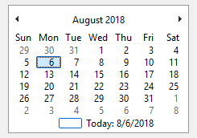
除了常规选项和样式之外, 以下内容也是被支持或值得关注的:
Multi: 多选. 允许用户使用 shift-click 或 click-drag 来选择一个连续的日期范围(此时用户仍然可以选择单个日期). 此选项可以显式指定或通过 Timestamp 参数指定一个选择范围的方式自动生效. 一旦控件创建完成, 此选项便无法更改.
RangeMinMax: 限制日历中可以选择的时间范围. 指定 MinMax 为以 YYYYMMDD 格式表示的最小和最大的日期(它们之间使用破折号连接). 例如, Range20050101-20050615 将范围限定在 2005 年的前 5.5 个月之内. 最小或最大的日期可以省略, 此时控件中在这个方向上的日期不受限制. 例如, Range20010101 将禁止选择早于 2001 年的日期而 Range-20091231(有前导的破折号) 将禁止选择迟于 2009 年的日期. 如果不含 Range 选项, 则可以选择介于 1601 和 9999 年份之间的任何日期. 无法限制日期的时间部分..
4: 来在每行日期的左边显示周数(1-52). Week 1 被定义为至少包含四天的第一周.
8: 禁止控件中当前日期往复循环.
16: 禁止在控件的底部显示今天的日期.
VName: 接收以 YYYYMMDDHH24MISS 格式(不含任何时间部分) 表示的所选择日期的关联变量 . 然而, 当 multi-select 选项生效时, 会获取最小日期和最大日期, 并在两者之间添加连字符(例如 20050101-20050108). 如果在多选日历中仅选择了一个日期, 则最小日期和最大日期都会存在, 但两者完全相同.
GLabel: 当用户改变所选时, g-标签将会自动运行. 每次运行时, 更新控件的关联变量(如果有). 在 Windows XP 和更早的版本中, 由于操作系统的怪癖, 每隔两分钟也会启动标签, 以应对新的一天已经到来这种情况. 如果控件具有 AltSubmit 选项, 则 g-标签会更频繁地启动; 它可能会引用内置变量 A_GuiEvent, 该变量在日期更改时会包含单词 Normal, 点击一个日期时包含数字 1, 而当 MonthCal 释放 "鼠标捕获" 时包含数字 2. 例如, 如果用户双击一个新日期, 则标签会运行五次: 其中一次为 Normal, 两次为 1, 还有两次为 2. 这可以通过测量两次数字 1 实例之间的时间来检测双击.
(不常见的数字样式): 有关列表, 请参阅 MonthCal 样式列表.
如果为空或省略, 将预选今天的日期. 否则, 请以 YYYYMMDD 格式指定 – 要么是一个单独的日期, 要么是一段日期范围(通过在两个日期之间加上破折号来表示). 例如, 20050531 将预选 May 31, 2005, 而 20050525-20050531 选择的是 May 25 到 May 31, 2005 之间的每一天.
通常最好忽略 MonthCal 的宽度(W) 和高度(H), 这样它会自动调整大小来准确适应一个月份. 要垂直地显示多个月份, 请在 Options 中指定 R2 或更高. 要水平地显示多个月份, 请指定 W-2(W 负号 2) 或更高. 这两个选项可以同时出现, 此时会在两个方向上扩展.
可以点击控件底部的今日字符串来选择今天的日期. 此外, 还可以点击年份和月份名称来方便地导航到新的月份或年份.
在 Windows Vista 及以后版本中, 在 MonthCal 中完全支持键盘导航, 但只有当它具有键盘焦点时才支持. 有关支持的键盘快捷方式, 请参阅DateTime 的键盘导航(带有下拉日历).
如果控件的关联变量接收到诸如 20050101-20050108 这样的日期范围, 可以使用 StringSplit 或 StrSplit() 来将这些日期进行分割. 例如, 以下代码会将 20050101 存入 Date1 而 20050108 存入 Date2: StringSplit, Date, MyMonthCal, -.
当以 YYYYMMDD 格式指定日期时, MM 和/或 DD 部分可以省略, 此时它们默认为 1. 例如, 200205 被视为 20020501, 而 2005 被视为 20050101.
如果该控件具有经典主题外观, 日历中天数的颜色由 Gui Font 命令或 C (Color) 选项设置. 要改变日历其他部分的颜色, 如下例所示:
Gui +LastFound SendMessage, 0x100A, 5, 0xFFAA99, SysMonthCal321 ; 0x100A 为 MCM_SETCOLOR. 5 为 MCSC_TITLETEXT(标题文本颜色). 颜色必须以 BGR 格式指定, 而不是 RGB 格式(红蓝分量互换).
包含图像的区域.
语法:
Gui, Add, Picture, Options, ImageFile
示例:
Gui, Add, Picture, w300 h-1, C:\My Pictures\Company Logo.gif
控件类型名称可以是 Picture 或者 Pic.
除了常规选项和样式之外, 以下内容也是被支持或值得关注的:
AltSubmit: 该指令会指示程序使用微软的 GDIPlus.dll 来加载图像, 这可能让 GIF, BMP 和图标图像产生不同的外观. 例如, 它可以把含透明背景的 ICO/GIF 作为透明的位图进行加载, 这样允许 BackgroundTrans 选项才生效(不过从 [v1.1.23+] 开始, 透明图标可以不设置 AltSubmit 选项). 如果 GDIPlus 不可用(请参阅下个段落), 则 AltSubmit 选项会被忽略而使用常规方法加载图像.
Wn 和 Hn: 用于缩放图像的宽度和高度, 其中 n 是一个整数(这些尺寸还决定了从多图标文件中加载哪个图标). 如果某个维度被省略或设为 -1, 则会根据另一个维度自动计算其值, 以保持比例. 如果两个维度都省略, 则使用图像的原始尺寸. 如果某个维度为 0, 则该维度使用原始尺寸. 例如, 指定 w200 h-1 将使图像宽 200 像素, 并自动设置其高度. 如果图片无法加载或显示(例如找不到文件), 则控件被留空且设置其宽度和高度为零.
IconN: 若要使用文件中除第一个之外的其他图标组, 请指定 N 为该组的编号. 例如, Icon2 将加载来自第二个图标组的默认图标.
GLabel: 当用户点击图片时, g-标签将会自动运行. 可以通过检查 A_GuiEvent 是否包含单词 DoubleClick 来检测双击事件.
一个图像或多图标文件的名称, 如果未指定绝对路径, 则假定在 A_WorkingDir 中, 或 [v1.1.23+] 中的位图或图标句柄, 如 HBITMAP:%handle%.
图片文件: 在所有的操作系统中都支持 GIF, JPG, BMP, ICO, CUR 和 ANI 图像. 在 Windows XP 或更高版本中, 还支持其他图像格式, 例如 PNG, TIF, Exif, WMF 和 EMF. 比 XP 早的操作系统可以通过复制微软免费的 GDI+ DLL 到 AutoHotkey.exe 文件夹中来提供支持(但如果是已编译脚本, 则复制此 DLL 到脚本的文件夹). 要下载这个 DLL, 请在 www.microsoft.com 搜索下列短语: gdi redistributable
多 Icon 文件: 图标和光标可以从下列类型的文件中加载: ICO, CUR, ANI, EXE, DLL, CPL, SCR 以及包含图标资源的其他类型. 要使用文件中的图标组而不是首个图标, 请使用 Icon 选项.
要使用图片作为其他控件的背景, 则应该在其他控件之前正常添加图片. 然而, 如果这些控件是可输入型且此图片控件含有 g-标签, 那么在其他控件后创建图片控件并在其 Options 中包含 0x4000000(这是 WS_CLIPSIBLINGS). 使用此技巧还可以把一个图片设为 Tab 控件或 ListView 的背景.
虽然 GIF 动画文件可以显示在图片控件中, 但实际上它们并不会动起来. 要解决此问题, 请使用 AniGIF DLL(对非商业用途免费), 演示的例子请参阅 Autohotkey 论坛. [v1.1.03+]: 此外, 可以使用 ActiveX 控件类型. 例如:
; 指定下面的路径到 GIF 文件以实现动态效果(也允许使用本地文件): pic := "http://www.animatedgif.net/cartoons/A_5odie_e0.gif" Gui, Add, ActiveX, w100 h150, % "mshtml:<img src='" pic "' />" Gui, Show
一个双彩条, 通常用来指示一个操作接近完成的程度.
语法:
Gui, Add, Progress, Options, StartPos
示例:
Gui, Add, Progress, w200 h20 cBlue vMyProgress, 75
外观:

除了常规选项和样式之外, 以下内容也是被支持或值得关注的:
CColor: 改变进度条的颜色. 指定 Color 为 16 种基础 HTML 颜色名称之一或 6 位的 RGB 颜色值. 例如: cRed, cFFFF33, cDefault. 如果从没有使用过 C 选项(或指定了 cDefault), 则使用系统默认的进度条颜色.
BackgroundColor: 改变进度条的背景颜色. 指定 Color 为 16 种基础 HTML 颜色名称之一或 6 位的 RGB 颜色值. 例如: BackgroundGreen, BackgroundFFFF33, BackgroundDefault. 如果从没有使用过 Background 选项(或指定了 BackgroundDefault), 则使用窗口的或在进度条后面的选项卡控件的颜色作为背景颜色.
RangeMinMax: 设置范围为除 0 到 100 以外的其他数值. 指定 MinMax 为最小值, 破折号, 然后是最大值. 例如, Range0-1000 将允许选择一个介于 1 和 1000 之间的数字; Range-50-50 将允许介于 -50 和 50 之间的数字; 而 Range-10--5 将允许介于 -10 和 -5 之间的数字.
Smooth: 指定 -Smooth(负 Smooth) 显示一段段的长度而不是一个平滑连续的进度条. 指定 -Smooth 也是在 Windows XP 或更高版本中显示含主题的进度条的其中一个要求. 其他的要求是没有使用自定义的颜色, 即同时省略了 C 和 Background 选项.
Vertical: 让进度条垂直上升或下降而不是水平移动.
VName: The associated variable receives the current numeric position of the bar.
Wn: 设置控件的宽度. 例如, 指定 w400 将使该控件的宽度为 400 像素. 如果忽略, 则水平进度条默认为当前字体大小的 15 倍, 而垂直进度条默认为当前字体大小的 2 倍.
Rn 或 Hn: 设置控件的高度. 例如, 指定 r7 将使控件的高度为 7 行, 而 h400 则将控件的高度设置为 400 像素. 如果同时省略 R 和 H, 水平进度条默认为 2 倍当前字体大小, 而垂直进度条默认为 5 行.
(不常见的数字样式): 有关列表, 请参阅 Progress 样式列表.
如果为空或省略, 进度条的起始位置设定为 0 或者是允许范围内最接近 0 的数值. 否则, 请指定进度条的起始位置.
若要之后更改进度条的位置, 请参考以下示例, 所有示例均针对关联变量名 为 MyProgress 的进度条:
GuiControl,, MyProgress, +20 ; 增加 20 到当前位置. GuiControl,, MyProgress, 50 ; 设置当前位置为 50.
对于水平进度条, 其厚度等于控件的高度. 对于垂直进度条, 其厚度则等于控件的宽度.
单选按钮是一个小空圆, 可以被选中(打开) 或不选中(关闭).
语法:
Gui, Add, Radio, Options, Caption
示例:
Gui, Add, Radio, vMyRadioGroup, Wait for all items to be in stock before shipping.
外观:
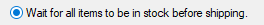
除了常规选项和样式之外, 以下内容也是被支持或值得关注的:
Checked: 按钮初始状态为 "on" 状态. 单词 Checked 后面可以紧接着跟一个 0 或 1 来表示初始状态(未选中或选中). 换句话说, Checked 和 Checked%VarContainingOne% 是一样的.
Group: 创建一个新的单选按钮组.
VName: 关联变量接收数字 1 表示 "on", 而 0 表示 "off". 然而, 如果单选按钮组只有一个按钮具有变量, 则该变量将接收当前选中按钮的编号: 1 表示第一个单选按钮(按照最初创建的顺序), 2 表示第二个, 依此类推. 如果没有按钮被选中, 则存储数字 0.
GLabel: 当用户打开按钮时, g-标签将会自动运行. 为单选按钮组中的每一个按钮指定 g-标签, 以便该标签能够被触发. 这样可以灵活地忽略某些按钮的点击操作. 可以通过检查 A_GuiEvent 是否包含单词 DoubleClick 来检测双击事件.
(不常见的数字样式): 有关列表, 请参阅 Radio 样式列表.
显示在单选按钮右侧的标注. 这通常用作提示或描述, 它可以包含换行符(`n) 来开始新行.
可以使用一个和符号(&) 让某个字母带下划线, 例如 &Pause 中的字母 P, 这允许用户按下 Alt+P 作为其快捷键. 要显示一个原义的和符号, 请指定两个连续的和符号(&&).
此控件经常出现在 单选按钮组, 每组包含两个或多个单选按钮. 当用户点击一个单选按钮来打开它时, 其所在的单选按钮组中其他所有的单选按钮会自动关闭(在单选按钮组中用户也可以使用方向键导航). 在所有连续添加的单选按钮周围会自动创建一个单选按钮组. 要开始一个新组, 新组的首个单选按钮中指定 Group 选项, 或者在新组和之前的组之间简单地添加一个非单选按钮控件, 因为这样会自动开始一个新组.
如果在 Options 中指定了宽度(W) 而没有指定行数(R) 或高度(H), 那么在需要时控件的文本将自动换行, 同时自动设置控件的高度..
已知限制: 某些桌面主题可能无法正确的显示单选按钮的文本. 如果遇到此情况, 请尝试在 Options 中包含 -Wrap(负 Wrap). 不过, 这也会阻止多行文本.
用户可以沿着垂直或水平轨道移动的滑动条. 在任务栏托盘中的标准音量控件就是滑动条的一个例子.
语法:
Gui, Add, Slider, Options, StartPos
示例:
Gui, Add, Slider, vMySlider, 50
外观:
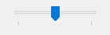
除了常规选项和样式之外, 以下内容也是被支持或值得关注的:
Buddy1VarName 和 Buddy2VarName: 自动将最多两个现有的控件定位到滑动条的两侧. Buddy1 显示在左边或顶部(取决于是否存在 Vertical 选项). Buddy2 显示在右侧或底部. 指定 VarName 为现有控件的关联变量名称. 例如, Buddy1MyTopText 将分配变量名为 MyTopText 的控件.
Center: 滑块(用户移动的滑动条) 两端将是钝的, 而不是指向一端(尖的).
Invert: 反转控件, 把较低值作为右边/底端而不是左边/顶端. 此选项常用来让垂直滑动条在传统的音量控件方向上移动. 注: ToolTip 选项不会遵循反转, 因此不应该在这种情况下使用.
Left: 滑块(用户移动的滑动条) 将指向上方而不是下方(原文中为顶端和底端, 这里用上/下方是为了避免和滑动条的顶端/底端混淆). 但如果存在 Vertical 选项, 则滑块将指向左边而不是右边.
LineN: 指定 N 为当用户按下 ↑, →, ↓ 或 ← 时要移动的位置数量. 例如, Line2.
NoTicks: 不在轨道旁边显示刻度标记.
PageN: 指定 N 为当用户按下 PgUp 或 PgDn 时要移动的位置数量. 例如, Page10.
RangeMinMax: 设置范围为除 0 到 100 以外的其他数值. 指定 MinMax 为最小值, 破折号, 然后是最大值. 例如, Range0-1000 将允许选择一个介于 1 和 1000 之间的数字; Range-50-50 将允许介于 -50 和 50 之间的数字; 而 Range-10--5 将允许介于 -10 和 -5 之间的数字.
ThickN: 指定 N 为滑块(用户移动的滑动条) 的长度(像素). 例如, Thick30. 在 Windows XP 或更高版本中, 要超过一定的厚度可能需要指定 Center 选项或移除控件的主题(通过在控件的选项中指定 -Theme 来实现).
TickIntervalN: 在轨道旁边指定间隔的位置显示刻度标记. 指定 N 为 显示附加的刻度标记的间隔(如果间隔从未设置, 则默认为 1). 例如, TickInterval10 将每隔 10 位置显示一个刻度标记.
ToolTip: 创建 tooltip, 当用户拖动滑动条时显示它的数字位置. 要让工具提示不显示在默认位置, 请指定下列单词的其中一个代替: ToolTipLeft 或 ToolTipRight(对于垂直滑动条); ToolTipTop 或 ToolTipBottom (对于水平滑动条).
Vertical: 让控件上下滑动而不是左右滑动.
VName: 接收到滑动条当前的数字位置的关联变量.
GLabel: 当用户停止移动滑块时(例如在拖拉滑块后释放了鼠标按钮), g-标签将自动运行. 每次运行将更新控件的关联变量(如果有). 如果控件有 AltSubmit 选项, g-标签将运行得更频繁; 它可能会引用内置变量 A_GuiEvent, 该变量中包含单词 Normal 时表示停止滑块的移动, 数字 0 表示按下了 ← 或 ↑, 数字 1 表示按下了 → 或 ↓, 数字 2 表示按下了 PgUp, 数字 3 表示按下了 PgDn, 数字 4 表示用户用鼠标滚轮移动了滑块或已经把滑块拖放到新的位置, 数字 5 表示用户正用鼠标拖动滑块(即鼠标按钮当前是按住的), 数字 6 表示按下了 Home 键来移动滑块到左端或顶部, 或者数字 7 表示按下 End 来移动滑块到右端或底部. 例如, 如果用户将滑块向右拖动了一格, g-标签将会被触发三次: 5, 4, 和 Normal.
Wn: 设置控件的宽度. 例如, 指定 w400 将使该控件的宽度为 400 像素. 如果忽略, 则水平滑动条默认为当前字体大小的 15 倍, 而 垂直滑动条默认为 30 像素(except if a thickness has been specified).
Rn 或 Hn: 设置控件的高度. 例如, 指定 r7 将为控件预留 7 行空间, 而 h400 将设置其高度为 400 像素. 如果同时省略 R 和 H, 水平滑动条默认为 30 像素(except if a thickness has been specified), 而垂直滑动条默认为 5 行.
(不常见的数字样式): 有关列表, 请参阅 Slider 样式列表.
如果为空或省略, 滑动条初始位置为 0 或允许的范围中最接近 0 的数字. 否则, 请指定滑动条的起始位置.
用户可以通过下列方法滑动控件: 1) 使用鼠标拖拉滑动条; 2) 用鼠标在滑动条的轨道区域点击; 3) 当焦点在控件上时转动鼠标滚轮; 或 4) 当焦点在控件上时使用下列按键: ↑, →, ↓, ←, PgUp, PgDn, Home 和 End.
附加到窗口底部的一行文本和/或图标, 通常用来报告状态的变化.
语法:
Gui, Add, StatusBar, Options, Text
示例:
Gui, Add, StatusBar,, Bar's starting text (omit to start off empty).
SB_SetText("There are " . RowCount . " rows selected.")
外观:
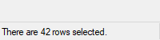
除了常规选项和样式之外, 以下内容也是被支持或值得关注的:
BackgroundColor: 改变控件的背景颜色. 指定 Color 为颜色名称(请参阅颜色图表) 或 RGB 值(0x 前缀是均可选的). 例如: BackgroundSilver, BackgroundFFDD99, BackgroundDefault. 注意, 控件必须具有经典主题外观.
GLabel: 当用户点击状态栏时, g-标签将会自动运行. G-标签可引用内置变量 A_GuiEvent, 点击状态栏时包含单词 Normal, 右键点击栏状态时为 RightClick, 双击状态栏时为 DoubleClick, 或 右键双击 状态栏时为字母 R. 它也可引用内置变量 A_EventInfo, 该变量将包含被点击部分的编号. 注意, 如果状态栏带有 g-标签, GuiContextMenu 不会被调用; 应使用 RightClick 事件代替.
(不常见的数字样式): 有关列表, 请参阅 StatusBar 样式列表.
如果为空或省略, 该控件初始为空. 否则, 请指定控件内部显示的文本内容.
以下这些函数会作用于当前线程的默认图形用户界面窗口(可通过 Gui Default 变更). 如果默认窗口不存在或者没有状态栏, 这些函数会返回零以表示存在问题.
Overview:
在状态栏指定的区域显示新的文本.
SB_SetText(NewText , PartNumber, Style)
NewText: 在新文本中任意地方最多可以使用两个 tab 字符(`t): 在首个 tab 字符右边的任何内容显示在此部分中心, 而在第二个 tab 右边的内容会右对齐显示.
PartNumber: 如果省略, 则默认为 1. 否则, 请指定介于 1 和 256 之间的整数.
Style: 如果省略, 则默认为 0, 此时使用让状态栏那部分看起来凹陷的传统边界. 否则, 指定 1 为无边框, 2 为带边框, 让状态栏看起来是凸起的.
函数成功时返回 1, 而失败时为 0.
根据指定的宽度将状态栏区域划分成多个部分.
WidthN: 如果省略所有参数, 则状态栏恢复为只有一个很长的部分. 否则, 指定除了最后一部分外的其他每个部分的宽度(最后一部分将填充状态栏的剩余宽度). 例如, SB_SetParts(50, 50) 将创建三个部分: 前两个部分的宽度都为 50, 而最后一部分占据剩余的所有宽度. 数字的单位为像素.
函数成功时返回状态栏的窗口句柄(HWND). 在失败时返回 0.
函数"删除" 的任何部分下次显示时都不会显示文本. 此外, 其图标也会自动被删除.
在指定部分的文本左边显示一个小图标.
SB_SetIcon(FileName , IconNumber, PartNumber)
FileName: 指图标或多图标文件的名称, 如 "Shell32.dll", 或 [v1.1.23+] 中的图标句柄 如 "HICON:" handle, 或 [v1.1.27+] 中的非图标图片文件或位图句柄 如 "HBITMAP:" handle. 有关支持的格式列表, 请参阅 Picture. 若未指定绝对路径, 则假定该文件位于 A_WorkingDir 目录中.
IconNumber: 如果省略, 则默认为 1(即第一个图标组). 否则, 请指定文件中要使用的图标组的编号. 例如, 2 将使用第二个图标组中的默认图标. 如果 为负数, 则假定其绝对值表示可执行文件中图标的资源 ID.
PartNumber: 如果省略, 则默认为 1. 否则, 请指定介于 1 和 256 之间的整数.
函数成功时返回图标的句柄(HICON), 而失败时返回 0. The HICON 是一种系统资源, 它可以被大多数脚本安全地忽略, 因为当状态栏的窗口被销毁时它会被自动销毁. 同样, 当函数用新图标替换旧图标时会销毁旧图标. 这种情况可以使用以下方法避免:
Gui +LastFound SendMessage, 0x040F, PartNumber - 1, HICON, msctls_statusbar321 ; 0x040F 为 SB_SETICON.
状态栏最简单的使用方法是在任何需要向用户报告的变化发生时调用 SB_SetText() 函数. 若要报告多条信息, 可通过 SB_SetParts() 函数将状态栏划分为多个部分. 若要在状态栏中显示图标, 则需调用 SB_SetIcon() 函数.
尽管字体大小, 外观和样式可以使用 Gui Font 设置(像普通控件一样), 但是无法改变文本颜色. 而且, 不遵循 Gui Color 的颜色设置; 代替的方法是, 状态栏的背景颜色可以通过使用 Background 选项来更改.
创建时, 可以使用 Gui, Add, StatusBar, Hidden vMyStatusBar 来隐藏状态栏. 要在创建后某个时候隐藏它, 请使用 GuiControl, Hide, MyStatusBar. 要显示, 请使用 GuiControl, Show, MyStatusBar. 注意: 隐藏状态栏不会降低窗口的高度. 如果希望这样, 一个简便的方法是 Gui, Show, AutoSize.
已知限制: 1) 如果某个控件的位置和状态栏重叠, 那么它有可能会被绘制在状态栏的上方. 避免这种情况的一种方法是通过 GuiSize 标签动态地缩小这样的控件. 2) 每个窗口只允许有一个状态栏控件.
TreeView 示例 #1 演示了一个多部分的状态栏.
创建和控制状态栏中的进度条, 请参阅 SB_SetProgress(旧论坛).
一个包含多个页面的大型控件, 其中每个页面包含其他控件. 从这里开始, 这些页面被称为 "选项卡(标签页)".
语法:
Gui, Add, Tab, Options, TabNames
示例:
Gui, Add, Tab,, General|View|Settings
外观:
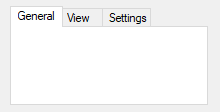
控件类型名称可以是 Tab, Tab2 或 Tab3:
Tab: 保留向后兼容性, 因为在 Tab2/Tab3 和 Tab 之间有着行为差异.
Tab2 [v1.0.47.05+]: 修正了原有 Tab 控件罕见的重绘问题, 但是引入了一些其他问题.
Tab3 [v1.1.24+]: 推荐. 修复若干影响 Tab2 和 Tab 的问题. 各控件位于一个可见的 "tab dialog(标签页对话框)", 其位置和大小随选项卡控件的移动和大小的改变而改变. 选项卡控件使用默认主题.
除了常规选项和样式之外, 以下内容也是被支持或值得关注的:
ChooseN: 指定 N 为要预选的选项卡编号. 例如, Choose5 会预选第五个选项卡(和其他选项一样, 它也可以为变量, 例如 Choose%Var%). 要在控件创建后改变选择的选项卡或添加/移除选项卡, 请使用 GuiControl.
Background: 指定 -Background(负 background) 覆盖窗口的自定义背景颜色, 而使用系统默认的选项卡控件的颜色.
Theme: 让选项卡控件适应于当前桌面主题. 然而, 在这样选项卡控件内的大多数类型的控件看起来会很奇怪, 因为它们的背景颜色不匹配选项卡控件的背景颜色. 对于某些类型的控件(例如 Text), 这种情况可以在它们的选项中添加 BackgroundTrans 来修复. Tab3 默认是主题化的, 不需要这个修复.
Buttons: 在控件的顶部创建一系列按钮而不是选项卡(此时在默认情况下, 将没有边界, 因为显示的区域实际并不包含控件).
Left, Right, 或 Bottom: 指定这些单词的其中一个让选项卡显示在左边, 右边或底部而不是顶部. 有关 Left 和 Right 的限制, 请参阅 TCS_VERTICAL.
Wrap: 指定 -Wrap(负 Wrap) 阻止选项卡占用多行(此时为了适应过多的选项卡, 会显示箭头按钮以允许用户滑动来查看更多选项卡).
VName: 接收当前选定选项卡的名称的关联变量. 然而, 如果控件有 AltSubmit 属性, 变量将接收选项卡的索引(第一个选项卡为 1, 第二个选项卡为 2, 以此类推).
GLabel: 每当用户切换到新标签页时, g-标签就会自动启动. 每次启动都会更新控件的关联变量(如果有).
Wn: 设置控件的宽度. 例如, 指定 w400 将使该控件的宽度为 400 像素. 如果省略, 则默认值为当前字体大小的 30 倍, 加上 3 倍 X-边距. 带有子控件的 Tab3 忽略此默认值.
Rn 或 Hn: 设置控件的高度. 例如, 指定 r7 将为控件预留 7 行空间, 而 h400 则将控件的总高度设置为 400 像素. 如果同时省略 R 和 H, 则默认值为 10 行. 带有子控件的 Tab3 忽略此默认值.
(不常见的数字样式): 有关列表, 请参阅 Tab 样式列表.
一个以竖线分隔的标签页名称列表, 如 Red|Green|Blue. 若要在窗口首次出现时预选其中一个标签, 请在其后添加两个竖线字符, 例如 Red|Green||Blue, 或者使用 Choose 选项.
创建选项卡控件后, 随后添加的控件自动属于其首个选项卡. 这可以在任何时候改变, 请参照这些例子:
Gui, Tab ; 随后的控件不属于任何选项卡控件的一部分. Gui, Tab, 3 ; 随后的控件属于当前选项卡控件的第三个选项卡. Gui, Tab, 3, 2 ; 随后的控件属于第二个选项卡控件的第三个选项卡. Gui, Tab, Name ; 随后的控件属于名称以 Name(不区分大小写) 开始的选项卡. Gui, Tab, Name,, Exact ; 与上面相同, 不过这里需要准确匹配(并区分大小写).
还可以使用上面的每个例子分配控件到还不存在的选项卡或选项卡控件(不包括使用 Name 方法的情况). 但在此情况下, 不支持下面描述的相对位置选项.
当一个 Tab 控件的每个选项卡接收到其首个子控件, 此子控件在下列情况下将具有特殊的默认位置: 1) 同时省略 X 和 Y 坐标, 此时首个子控件放在选项卡控件内部的左上角(带有标准的边距), 而首个子控件后的其他子控件放在之前控件的下面; 2) 指定了 X+n 和/或 Y+n 位置选项, 此时子控件放在相对于选项卡控件内部的左上角的位置. 例如, 指定 x+10 y+10 会把控件放置在左上角往右和往下各 10 个像素的位置.
键盘导航: 用户可以按下 Ctrl+PgDn/PgUp 来在选项卡控件的页面间导航; 如果键盘焦点在不属于选项卡的控件上, 则会导航到窗口的首个选项卡控件. 也可以使用 Ctrl+Tab 和 Ctrl+Shift+Tab, 除非当前焦点控件在多行编辑控件中(此时它们不起作用).
每个窗口的选项卡控件不能超过 255 个. 每个选项卡控件不能含有超过 256 个选项卡(页面). 此外, 选项卡控件不能包含其他选项卡控件.
通过 SendMessage 可以在每个选项卡的名称/文本旁边显示图标. 演示的例子请参阅论坛主题 Icons in tabs.
注意: "Tab 控件" 是三种类型(Tab, Tab2 和 Tab3) 的统称. 在本节中, 若明确指的是原始的 "Tab" 控件, 则将其标注为 "Tab1" 以避免混淆.
父窗口: 控件的父窗口影响控件的位置和可见性以及 Tab 键的导航顺序. 如果子控件添加到已存在的 Tab3 选项卡控件, 其父窗口是 "tab dialog", 该父窗口填充选项卡控件的显示区域. 大部分其他控件, 包括 Tab1 或 Tab2 中的子控件, 没有父窗口除了 Gui 界面本身.
位置: 对于 Tab1 和 Tab2, 子控件不需要在他们的选项卡控件的边界内: 当标签页是激活或未激活时, 他们总是会显示和隐藏. 这种行为特别适合 Buttons 选项.
对于 Tab3, 在标签页控件创建之 前 添加子控件的行为与 Tab1 或 Tab2 是一致的. 所有其他子控件只在 Tab3 控件的显示区域内可见.
如果移动 Tab3 控件, 他的子控件也随之移动. Tab 和 Tab2 控件没有这个行为.
在极少数情况下 WinMove(或等效的 DllCall) 用于移动控件, 坐标必须相对于控件的父窗口, 而不是 Gui(参阅上面的信息). 相比之下, GuiControl Move使用 GUI 坐标和 ControlMove 使用窗口坐标, 这些与控件的父窗口无关.
自动尺寸: 如果脚本没有指定, 在下列情况下 Tab3 控件的宽度 和/或 高度将会自动计算(在控件创建后以先到者为准):
存在的子控件计算尺寸时, 自动调整的尺寸再加上默认边距. 尺寸只计算一次, 即使添加控件也不会重新计算. 如果 Tab3 控件是空的, 与 Tab1 或 Tab2 控件相同的默认大小.
Tab1 和 Tab2 控件不会自动计算尺寸; 它们接受任意默认大小.
Tab 键导航顺序: Tab 导航顺序通常取决于控件创建的顺序. 当选项卡控件激活时, 顺序也取决于选项卡控件的类型:
通知消息(Tab3): 命令和自定义 控件通常向他们的父窗口发送通知消息. Tab3 控件的 tab dialog 接收到的任何 WM_COMMAND, WM_NOTIFY, WM_VSCROLL, WM_HSCROLL 或 WM_CTLCOLOR 消息转发到 GUI 窗口和能被 OnMessage() 检测. 如果标签页控件使用主题并且其子控件没有 +BackgroundTrans 选项, tab dialog 处理 WM_CTLCOLORSTATIC 消息而不转发. 其他的通知消息(例如自定义消息) 不被支持.
Tab2 的已知问题:
Tab1 的已知问题:
包含用户不能编辑的无边界文本的区域. 常用来标识其他控件.
语法:
Gui, Add, Text, Options, String
示例:
Gui, Add, Text,, Please enter your name:
外观:

除了常规选项和样式之外, 以下内容也是被支持或值得关注的:
GLabel: 当用户点击文本时, g-标签将会自动运行. 可以通过检查 A_GuiEvent 是否包含单词 DoubleClick 来检测双击事件.
(不常见的数字样式): 有关列表, 请参阅 Text 样式列表.
要显示的字符串, 它可以包含换行符(`n) 来开始新行. 此外, 一个长行可以使用延续片段的方法分成较短的几行.
可以使用一个和符号(&) 让某个字母带下划线, 例如 &First Name 中的字母 F. 这允许用户按下快捷键 Alt+F 来将键盘焦点设置到在 Text 控件之后添加的第一个可输入的控件上. 要显示一个原义的和符号, 请指定两个连续的和符号(&&). 要取消控件中和符号的特殊含义, 请在控件的 Options 中包含 0x80.
由于这是最后一个参数, 所以无需对原义逗号进行转义. 对于所有其他命令的最后一个参数来说, 也是如此.
如果 Options 中指定了宽度(W) 而没有指定行数(R) 或高度(H), 那么在需要时控件的文本将自动换行, 同时自动设置控件的高度.
TreeView 通过缩进父项目下的子项目来显示出层级关系. 最常见的例子是资源管理器的驱动器和文件夹树.
语法:
Gui, Add, TreeView, Options
示例:
Gui, Add, TreeView, r10
外观:

有关详情, 请参阅 TreeView 的单独页面.
一对箭头组成的按钮, 用户点击后会增加或减少值. 默认情况下, UpDown 控件自动依附于前一个添加的控件上. 这里的前一个控件被称为 UpDown 的 伙伴控件.
语法:
Gui, Add, UpDown, Options, StartPos
示例:
Gui, Add, Edit Gui, Add, UpDown, vMyUpDown Range1-10, 5
外观:
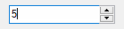
除了常规选项和样式之外, 以下内容也是被支持或值得关注的:
Horz: 使控件的按钮点指向左/右而不是上/下. 默认情况下, Horz 还会让控件变成孤立的(没有伙伴控件). 通过在控件选项中指定 Horz 16 可以覆盖此特性.
Left: 把 UpDown 放在其伙伴控件的左边而不是右边.
RangeMinMax: 设置范围为除 0 到 100 以外的其他数值. 指定 MinMax 为最小值, 破折号, 然后是最大值. 例如, Range1-1000 将允许选择一个介于 1 和 1000 之间的数字; Range-50-50 将允许介于 -50 和 50 之间的数字; 而 Range-10--5 将允许介于 -10 和 -5 之间的数字. 交换最小值和最大值可以让箭头往与正常方向相反的方向移动. 最大的允许范围是 -2147483648-2147483647. 最后, 如果伙伴控件为 ListBox, 那么垂直的默认范围是 32767-0, 而水平的则相反.
Wrap: 当用户试图超出最小值或最大值时使得控件返回到其范围的另一端. 如果省略, 当达到最小值或最大值时控件会停止.
16: 指定 -16(负 16) 让垂直的 UpDown 成为孤立的; 即让它没有伙伴控件. 这还可以让控件符合任何指定的宽度, 高度和位置而不是适应于其伙伴控件的大小. 此外, 孤立的 UpDown 会内部跟踪它自己的位置. 使用 Gui Submit 可以正常获取此位置.
0x80: 在伙伴控件中, 省略了通常存在于每三个小数位之间的小数点分隔符. 然而, 通常不使用此样式, 因为当脚本从 UpDown 控件(而不是其伙伴控件) 获取的数字中不包含分隔符.
VName: 接收 UpDown 的当前的数字位置的关联变量. 如果 UpDown 依附于 Edit 控件, 而且您不想确认用户的输入, 此时最好使用 UpDown 的值而不是 Edit 控件的. 这是因为 UpDown 总是产生一个允许范围内的数字, 即使用户在 Edit 控件中输入了非数字或超出范围的内容. 相关提示, 默认情况下超过三位的数字会添加千位分隔符(例如逗号). 这些分隔符保存在 Edit 控件的输出变量(如果有) 中, 但不在 UpDown 的变量中.
GLabel: 当用户点击增减按钮的其中一个或按下了键盘上的方向键时, g-标签将自动运行. 每次运行会更新控件的关联变量(如果有).
Wn: 设置孤立 UpDown 的宽度. 例如, 指定 w400 将使该控件的宽度为 400 像素. 如果忽略, 则垂直 UpDown 默认为当前字体大小的 2 倍, 而水平 UpDown 默认为当前字体大小的 15 倍.
Rn 或 Hn: 设置孤立 UpDown 的高度. 例如, 指定 r7 将为控件预留 7 行空间, 而 h400 则将控件的总高度设置为 400 像素. 如果同时省略 R 和 H, 则垂直 UpDown 默认为 5 行, 而水平 UpDown 默认 2 倍当前字体大小.
(不常见的数字样式): 有关详情, 请参阅 UpDown 样式列表.
如果为空或省略, UpDown 的起始位置设定为 0 或者是允许范围内最接近 0 的数值. 否则, 请指定 UpDown 的起始位置.
最常见的例子是 "微调器", UpDown 附加到 Edit 控件. 每当用户按下其中一个箭头按钮时, Edit 控件中的数字就会自动增加或减少.
UpDown 的伙伴控件也可以是 Text 或 ListBox 控件. 然而, 由于操作系统的限制, 除了这些以外的其他控件类型(例如 ComboBox 和 DropDownList) 可能无法和 g-标签以及其他特性一起正常工作.
若要将 UpDown 控件的增量值更改为 1 以外的其他数值(如 5 或 0.1), 请参阅这个脚本.
在伙伴控件中显示的数字格式可以由十进制更改为十六进制, 如下例所示:
Gui +LastFound SendMessage, 0x046D, 16, 0, msctls_updown321 ; 0x046D 是 UDM_SETBASE.
但是, 这只影响伙伴控件, 而不影响 UpDown 报告的位置.